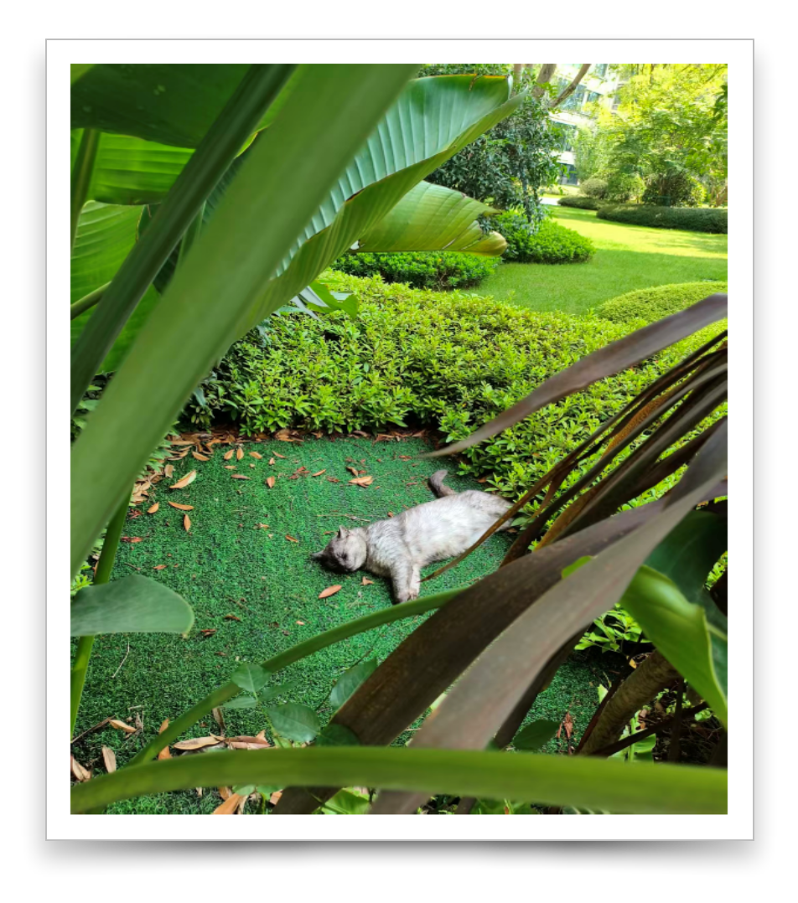

用程序写文档
1 标题、章节与段落
1.1 标题
使用title函数创建文章标题。
#lang scribble/manual @title{我是一个标题}
上面是使用标题的最简单的方式。除此之外它还有几个参数可用。
#lang scribble/manual @title[ #:tag "写作,编程" #:version "1.0" #:date "2026-07-14" ]{用程序写文档}
tag参数: 给文章用标签归类，标记其关键属性。
version参数: 用于描述当前文章的版本。
date参数: 用于描述写作时间。
上面这段代码就是你看到的本文的标题的样子。
1.2 小节
使用section函数创建文章小节。
#lang scribble/manual @title{用程序写文档} @section{标题、章节与段落}
这两行就是你当前看到这篇文章的标题和第一节的样子。
1.2.1 子小节
当然,小节的内部还可以嵌套节—
使用subsection函数创建子小节:
#lang scribble/manual @title{用程序写文档} @section{标题、章节与段落} @subsection{小节}
子小节中还可以有小节。假设本子小节要介绍的内容相对复杂，还需要分成三部分才能讲清楚，那么我
可以再创建三个小节。它们是本子小节中的小节。使用subsection
函数创建子小节中的小节:
#lang scribble/manual @title{用程序写文档} @subsection{标题、章节与段落} @subsection{小节} @subsubsection{子小节} @subsubsub*section{一、这里介绍A} @subsubsub*section{二、这里介绍B} @subsubsub*section{三、这里介绍C}
上面的最后三行将创建下面三个子子小节，它们在这里仅作为示例，并没有更多需要写的。
一、这里介绍A
二、这里介绍B
三、这里介绍C
1.3 段落与列表
使用段落就更加简单了。直接写的文本就是段落的文字。下面代码的最后一行
中就是你现在看到的内容。
#lang scribble/manual @title{用程序写文档} @subsection{标题、章节与段落} @subsection{小节} @subsubsection{子小节} @subsubsub*section{一、这里介绍A} @subsubsub*section{二、这里介绍B} @subsubsub*section{三、这里介绍C} @subsection{段落} 使用段落就更加简单了。直接写的文本就是段落的文字。下面代码的最后一行 中就是你现在看到的内容。
到此,可以看到通过3个函数就可以创建一篇基本的有良好结构层级的文章了。
在写一篇文章时,很可能需要罗列一些东西，常常需要使用列表。列表有以下两种形式:
有序列表
无序列表
#lang scribble/manual @title{用程序写文档} @subsection{标题、章节与段落} @subsection{小节} @subsubsection{子小节} @subsubsub*section{一、这里介绍A} @subsubsub*section{二、这里介绍B} @subsubsub*section{三、这里介绍C} @subsection{列表} 在写一篇文章时,很可能需要罗列一些东西,常常需要使用列表。列表有以下两种形式: @itemlist[ @item{有序列表} @item{无序列表} ]
有序列表使用style参数:
#lang scribble/manual @itemlist[ #:style 'ordered @item{有序列表} @item{无序列表} ]
2 代码、图片与表格
2.1 代码
代码高亮有两种形式：行内高亮和代码块高亮。如果是racket语言的代码，可以分别用code和codeblock函数。 下面主要介绍scribble-tools库的代码高亮的使用，因为它支持更广泛的编程语言（达几十种）的代码高亮，
2.1.1 行内代码
使用scribble-tools库的xx-code函数，如css-code表示css代码行，java-code表示java代码行。
一行css代码.card { color: #c33; }的示例
#lang scribble/manual @require[scribble-tools] 一行css代码@css-code{.card { color: #c33; }}的示例
#lang scribble/manual @require[scribble-tools] 一行java代码@java-code{class Hello { void run() { System.out.println("hello world"); } }}的示例
2.1.2 代码块
使用scribble-tools的xxblock函数,如cssblock表示css代码块,javablock表示java代码块。可以通过以下两个参数来装饰样式。
line-numbers：展示行号
file：展示文件名
css代码块
.card { color: #c33; }
的示例:
#lang scribble/manual @require[scribble-tools] css代码块 @cssblock{ .card { color: #c33; } } 的示例:
java代码块
的示例:
#lang scribble/manual @require[scribble-tools] java代码块 @javablock[#:line-numbers 1 #:file "/code/hello.java"]{ class Hello { void run() { System.out.println("hello world"); } } }的示例
2.2 图片
通过image函数在文档中使用图片
#lang scribble/manual @require[scribble-tools] @image[#:scale 0.8]{./sleep-cat.jpg}}
使用figure函数添加边框
#lang scribble/manual @require[scribble-tools] @figure["cat" "别人家的猫"]{@image[#:scale 0.8]{./sleep-cat.jpg}}}
使用shadow-frame函数添加阴影
#lang scribble/manual @require[scribble-tools] @shadow-frame[(scale @bitmap{@with-file{sleep-cat.png}} 0.8 0.6)]

2.3 表格
列1 | 列2 | 列3 | ||||
1 | 2 | 3 | ||||
4 | 嵌套示例 |
|
3 链接与引用
按链接地址名显示链接http:www.yangliang.org：
#lang scribble/manual 按链接地址名显示链接@url{http:www.yangliang.org}:
按自定义名称显示链接回首页：
#lang scribble/manual 按自定义名称显示链接@hyperlink["http:www.yangliang.org"]{回首页}: